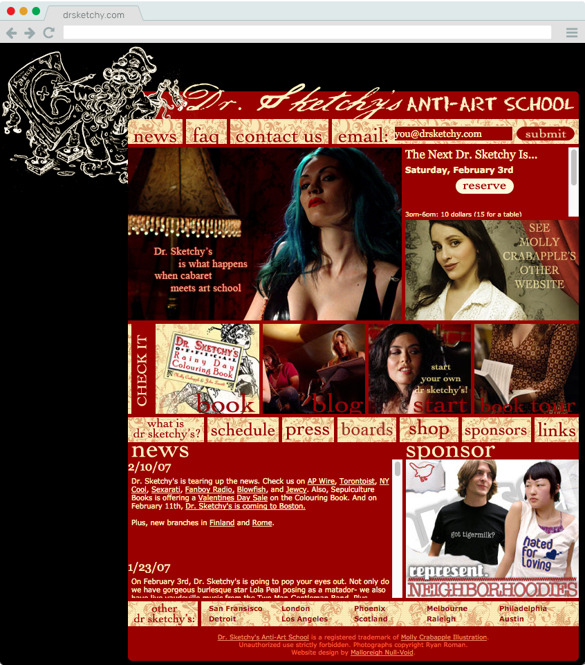
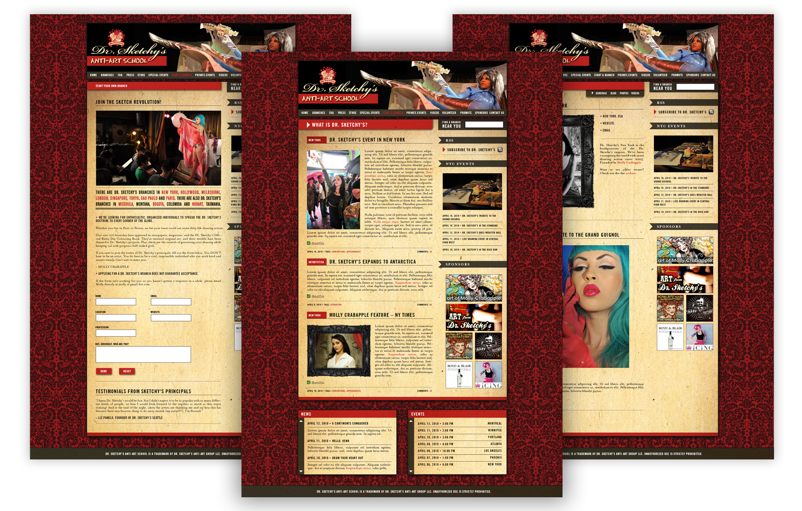
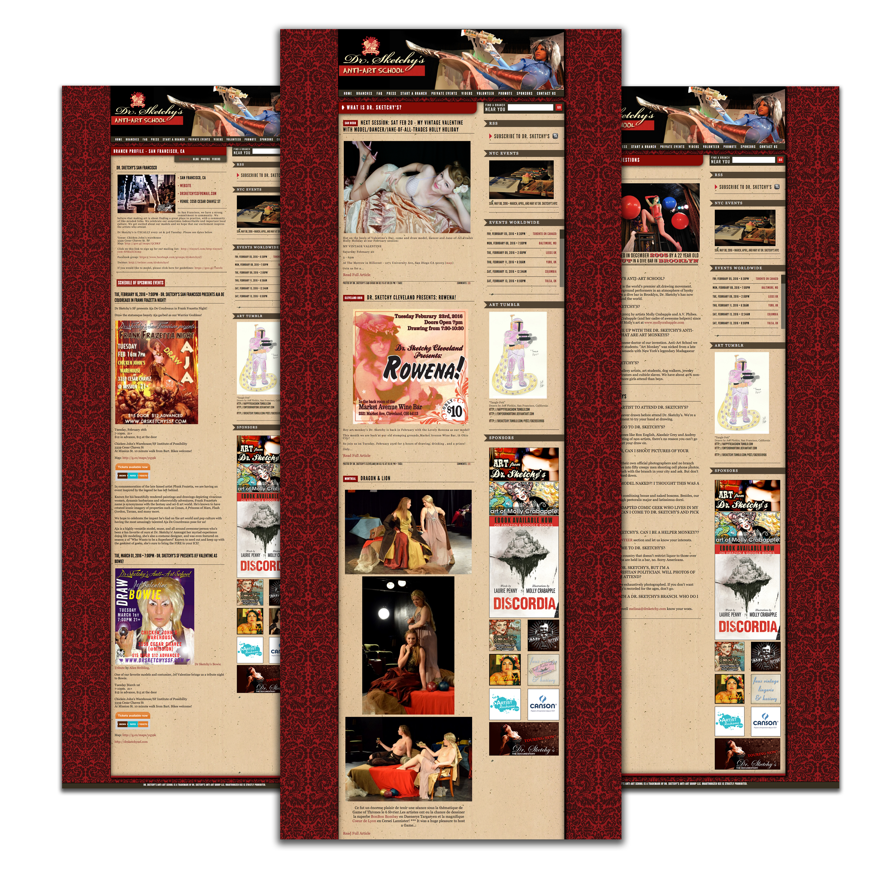

PROCESS

The original drsketchy.com was a static website that listed all active branches and their locations. It also hosted a simple PHP-based blog and event listings, but only for and accessed by the NYC branch members. With the company reaching nearly 100 licensed branches operating worldwide, it needed a dedicated hub site where fans and local members could visit to find out more information about their branch through individual profiles as well as advertise what was going on across the world with a shared blog.
I was handed this project after it was already behind schedule, with the idea of building an original CMS. I scrapped this, and, after a period of researching and comparing existing software, settled on the ExpressionEngine CMS, due to previous security issues we had with Wordpress's standard platform.
ExpressionEngine featured all the plugins required for handling event listings, ticket sales, mailing list generation and multi-user profiles with access-management. Its PHP-based design made it easy to adopt and learn its internal language for customizations.

I was given a number of screens designed in .PSD to use as a basis for creating the templates in HTML/CSS/Javascript. With the team of three, the site was able to launch in two months, meeting the tight deadline requirements to keep the project on schedule. Upon completion, the QA tech and I built an internal wiki database and explanatory PDF to onboard existing members. I trained all branch directors in use of the site and continued maintaining and training new directors for several years. As well, I developed an internal wiki, accessed only by account holders, that contained a variety of documents about running the events, either written by myself or by other branch directors.
Since then, small updates have been performed both for an easier backend for users as well as front-end improvements such as individual branch sponsor listings, a new photo gallery and bug fixes. The site was handed off to a new coordinator in 2018.

View Dr. Sketchy's live
www.drsketchy.com